Scriptum
Mayo 2015

Ghost en Sweden Rock Magazine (parte I)
(Fuente: zebu.co.nf)
Julio 2014
Ghost en Sweden Rock Magazine (parte I)
(Fuente: zebu.co.nf)Julio 2014
Bajo las sotanas: Terrorizer destapa el seductor misterio de Ghost |
Ghost France entrevista a un Nameless Ghoul. Zenith, Paris, 2014 |

|

|
Febrero 2014
Under The Gun: Ghost - Entrevista con un Nameless Ghoul |
| 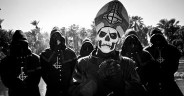 |
Enero 2014
Tone Deaf: Ghost habla de anonimato, festivales y sus fans de alto perfil |
Papa Don’t Preach (entrevista) |

|

|
Junio 2013
Entrevista a Ghost en el Download Festival, junio de 2013 |
Noize: Ghost - Entrevista |

|

|
Mayo 2013
Q & A: Ghost habla sobre el arte orgiástico y el destino infernal de ABBA |
Un Nameless Ghoul de Ghost habla sobre “Infestissumam”, el Demonio y más. |
| 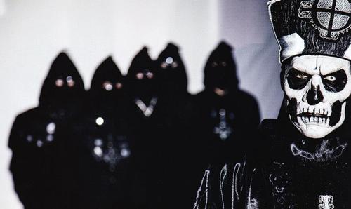 | 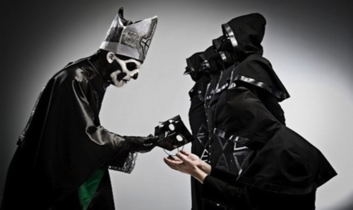 |
Ghost, entrevista en Montreal |
Somos sólo Ghost! entrevista en Exclusive! |
| 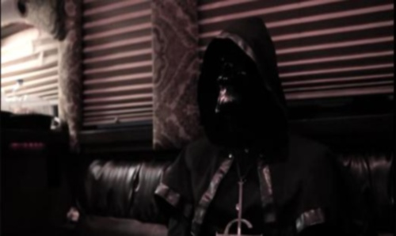 | 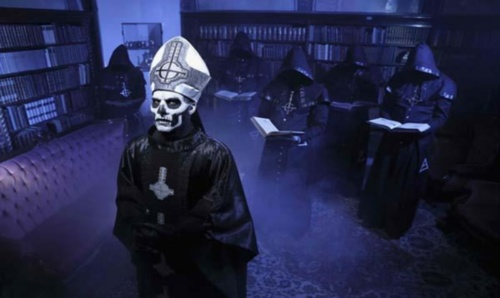 |
Fantasmas ocultos y otros demonios - entrevista con Ghost |
Ghost, entrevista con MusikUniverse en Montreal, abril 2013 |
| 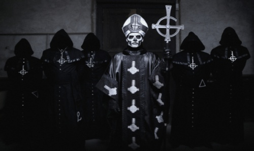 | 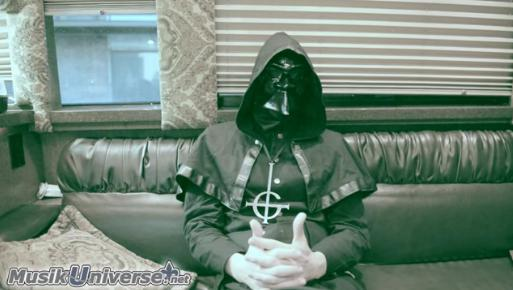 |
Ghost: “Papa Emeritus existe de la misma forma en que existe Darth Vader” |
|
| 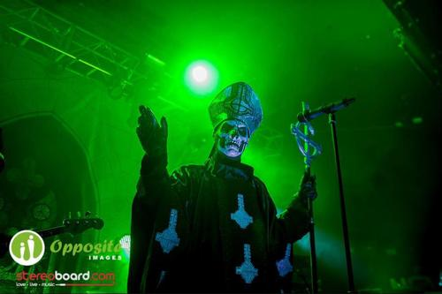 |
Abril 2013
GHOST JAGERMEISTER MUSIC TOUR 2013 (Entrevista - Traducción) |
PV Q&A: Ghost. Nameless Ghoul habla sobre Infestissumam, su controversial arte, y su extraña energía sexual |
| 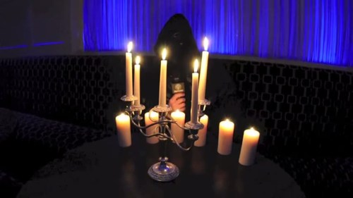 | 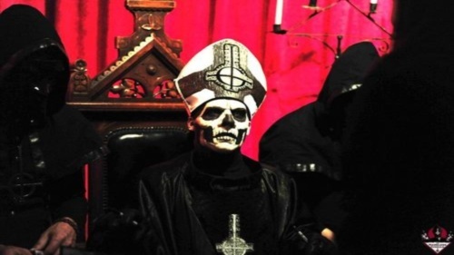 |
Ghost difunde el rock maldito (entrevista) |
|
| 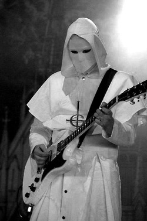 |
Marzo 2013
Ghost en ´Sup magazine: Occult rock |
Nameless Ghoul de Ghost: “Yo creo que permanecer en el anonimato puede ser una medida saludable” … |
| 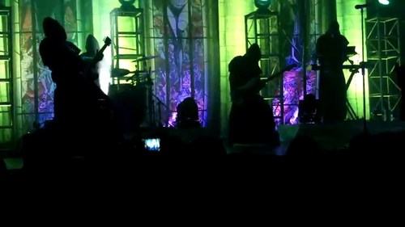 | 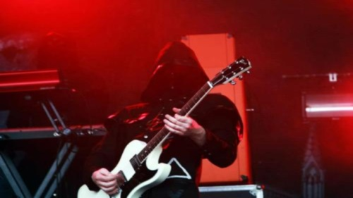 |
Diciembre 2012
Ghost - En las sombras (Feb. 1, 2012) |
DEFENSORES DE LA FE |

|
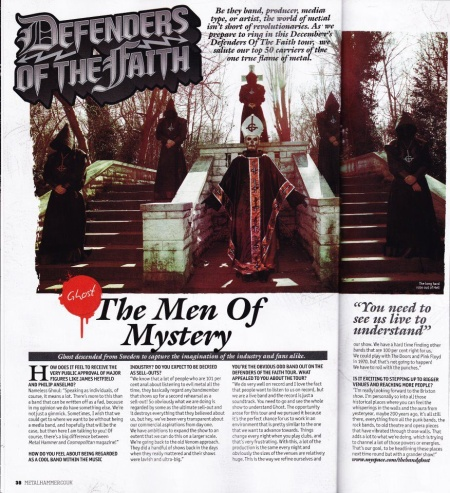 |